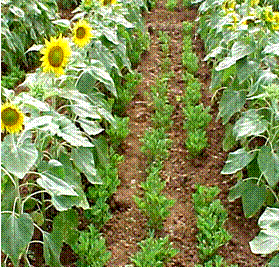

Sunflower Irrigation
- Water Management:
Irrigate immediately after sowing followed by an irrigation on 4 - 5th day and later at intervals of 7 to 8 days according to soil and climatic conditions, seeding, flowering and seed development stage (ie) two weeks before and after flowering.
NOTE: Do not heap or store the heads before drying properly as mould fungi will develop and spoil the grain quality.
c. Thresh using a mechanical thresher, or beat with a stick and separate the grains.
d. Winnow and clean the seeds
e. Dry the seeds again in the sun for another two days
f. Store in gunny bags - Weed Management:
- Apply Fluchloralin at 2.0 l/ha before sowing and incorporate or apply as pre-emergence spray on 5 day after sowing followed by irrigation or apply Pendimethalin as pre-emergence spray 3 days after sowing. The spray of these herbicides has to be accomplished with Back Pack/Knapsack/Rocker sprayer fitted with flat fan nozzle using 900 l water/ha as spray fluid.
- All the herbicide application is to be followed by one late hand weeding 30 - 35 days after sowing.
- Hoe and hand weed on the 15th and 30th day of sowing and remove the weeds. Allow the weeds to dry for 2 - 3 days in the case of irrigated and then give irrigation.
